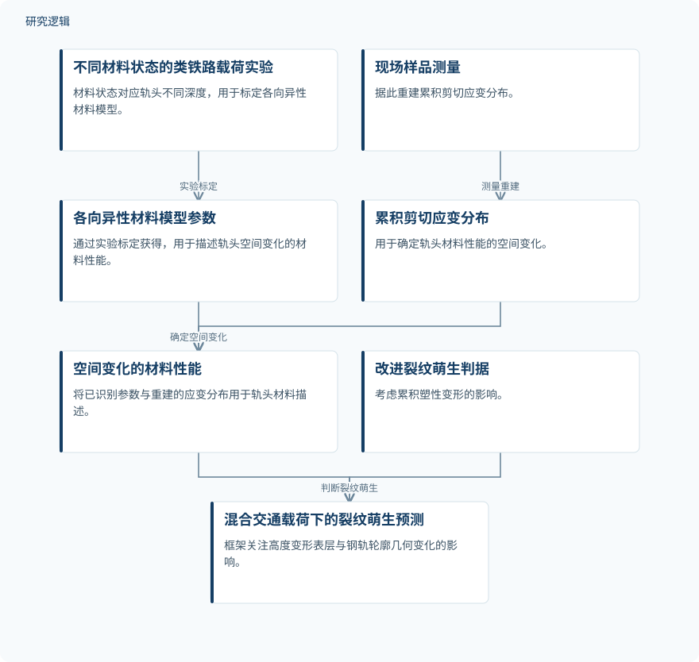

摘要解读
高度变形钢轨钢的裂纹萌生预测：塑性建模、机器学习加速与疲劳准则
Predicting crack initiation in highly deformed rail steel; Plasticity modeling, machine-learning-accelerated plasticity simulations, and fatigue criteria
解读更新 2026-11-10 10:50 · 依据公开摘要整理，未核验全文细节
钢轨表层在反复滚动接触中累积塑性变形，既改变裂纹萌生条件，也增加长期仿真的计算负担。这篇学位论文围绕两个相互关联的问题展开：如何更真实地预测裂纹萌生，以及如何更高效地计算循环塑性响应。
文章目录
裂纹预测不能忽略已经变形的表层
滚动接触疲劳（RCF）裂纹萌生常与钢轨、车轮表层累积的大塑性变形相关。这些变形会改变材料的力学与疲劳行为，并诱发各向异性，但不少相关研究未考虑变形后近表层材料的影响。
与此同时，交通载荷下塑性变形的长期累积计算十分耗时。因此，研究面对的不只是材料描述问题，还包括如何以可承受的计算成本追踪循环响应。
把材料状态带入预测，用机器学习加速塑性计算
针对混合交通载荷下的轨头，研究利用不同材料状态下的类铁路载荷实验标定各向异性材料模型，这些状态对应轨头不同深度。随后依据现场样品测量重建累积剪切应变分布，描述材料性能的空间变化，并引入考虑累积塑性变形的改进裂纹萌生判据。
计算加速采用两条路径：一条在循环域预测每个载荷循环的峰值应力与塑性应变，分别用神经网络和符号回归表述塑性应变的逐循环演化；另一条构建神经网络显式时间积分器，通过结构设计满足基本塑性约束，使其能够采用较大的应变增量。
依据摘要整理的裂纹预测建模过程


仅概括摘要明确陈述的材料标定、空间性能描述与裂纹预测关系，不代表论文原图，也不表示计算加速方法已与该流程完成集成。
下载 SVG图示关系说明
实线表示相邻阶段的信息流，虚线表示跨阶段联系或反馈。
不同材料状态的类铁路载荷实验 → 各向异性材料模型参数：实验标定；现场样品测量 → 累积剪切应变分布：测量重建；各向异性材料模型参数 → 空间变化的材料性能：提供材料参数；累积剪切应变分布 → 空间变化的材料性能：确定空间变化；空间变化的材料性能 → 混合交通载荷下的裂纹萌生预测：纳入预测框架；改进裂纹萌生判据 → 混合交通载荷下的裂纹萌生预测：判断裂纹萌生
表层状态影响预测，加速模型显示计算潜力
摘要报告，预测RCF裂纹萌生时，考虑高度变形的近表层材料与钢轨轮廓几何变化具有重要意义。但摘要没有给出两类因素各自的影响幅度，不能据此排列其贡献大小。
两种机器学习循环域模型均在训练范围内及范围外获得准确预测，神经网络与符号回归分别提供较强表达能力和显式演化方程。神经网络显式积分器则在较大应变增量下保持精度与数值稳健性；材料点和有限元模拟展示了较高精度、泛化能力及显著的计算时间缩减。
摘要尚不能界定误差与适用边界
仅凭摘要，无法判断材料试验与现场样品的数量、材料状态和载荷覆盖范围，也无法核对比较基线、误差指标及具体加速幅度。“训练范围外”的距离与类型、有限元验证涉及的工况同样未被具体说明。这些是当前资料的信息边界，不代表论文未开展相关工作。
阅读启发：分别审视物理描述与计算加速
阅读启发：可以将后续阅读重点分为两层——变形材料与轮廓变化如何改变裂纹萌生判断，以及机器学习如何在满足塑性约束的同时减少计算成本。若关注疲劳可靠性或智能运维，应进一步查明模型的适用工况与验证边界，而不把仿真加速直接等同于已验证的维护决策收益。
以上为本站阅读启发与建议，不是论文已验证的结论。